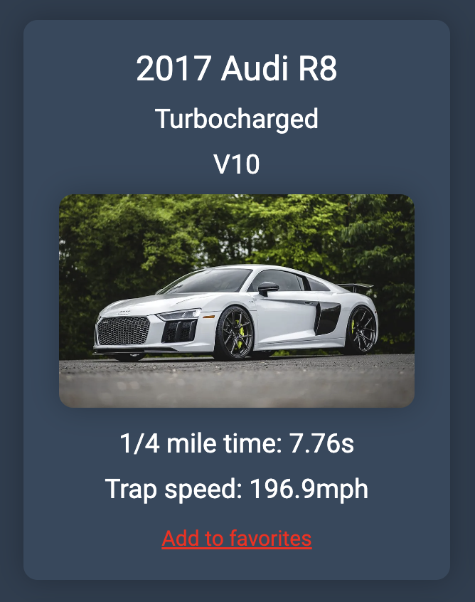
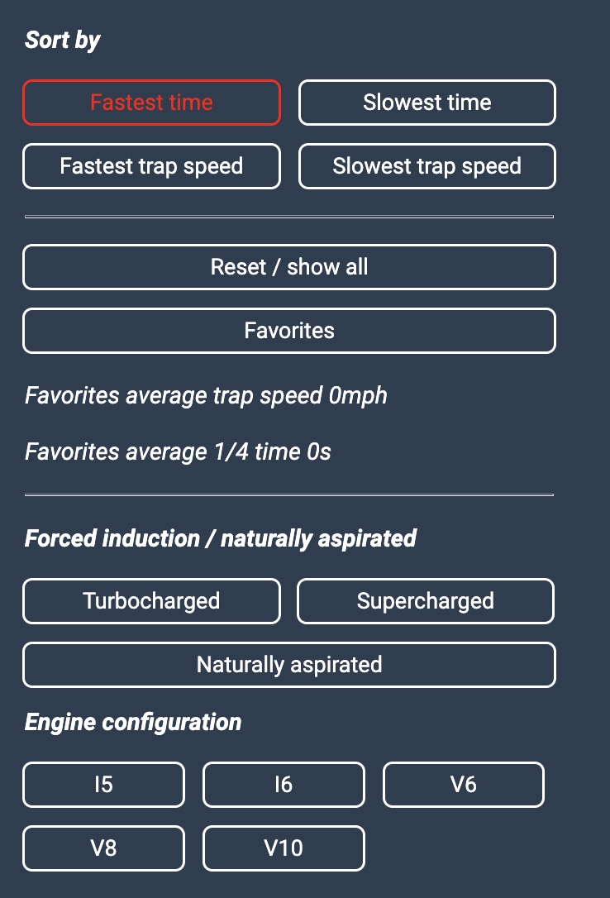
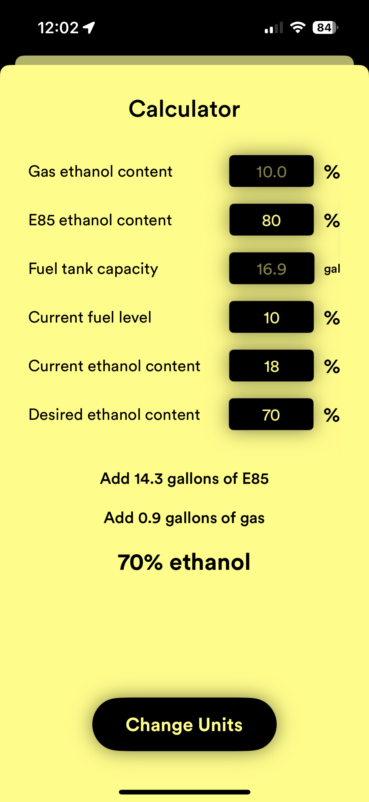
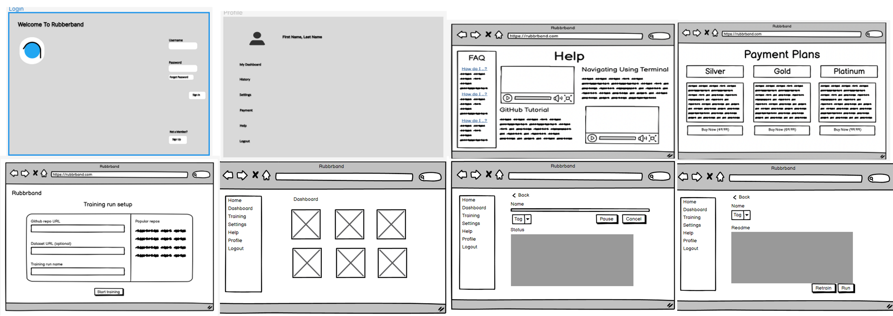
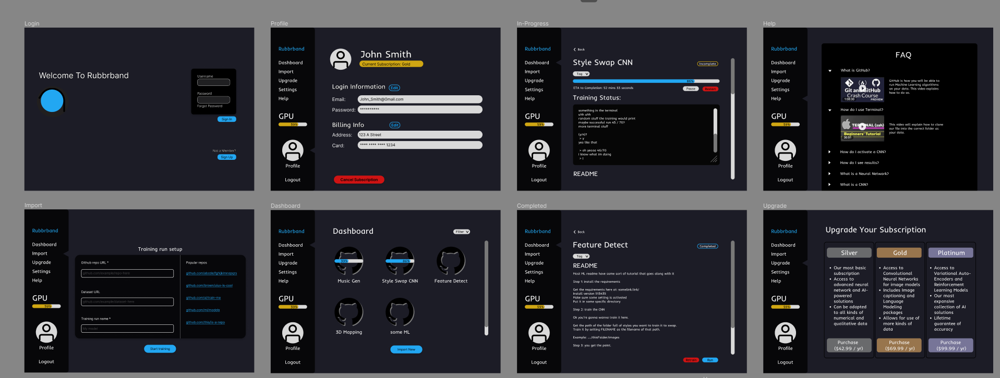
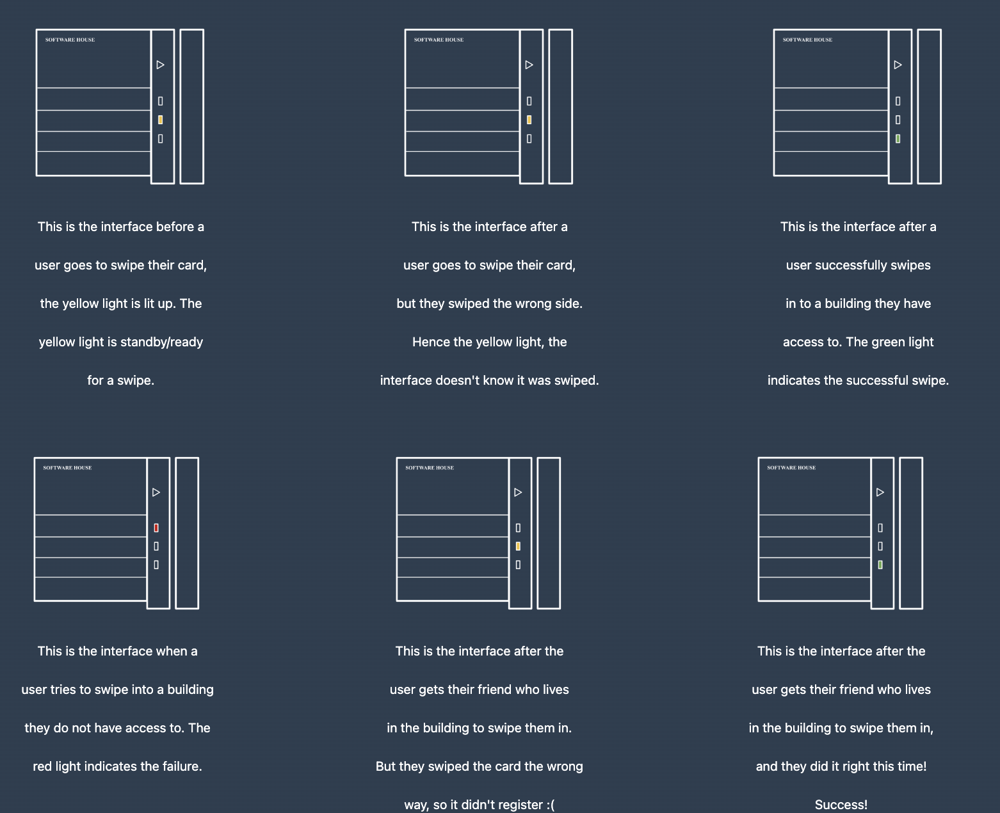

Hey there! My name is moscowmule1776,
I am a junior at Brown concentrating in computer science with a focus on
systems and security. I'm very passionate about the automotive industry
and enjoy developing products for vehicles both on the software and
hardware side of things. Outside computer science, working on, modifying,
and racing cars are the main things I do during my free time!
Development
Brown CS1300 project: creating a React webpage with content filtering and sorting

The Task
For this UI/UX assignment, students were tasked with creating an interactive interface using interface components, and tying them to an internal data state, with an emphasis on functionality and usability. I developed a drag racing results page with filter, sort, and aggregation functionality built with React JS.

My Implementation

I chose to make my page drag racing themed, and my website is filled with different cars with different modifications and power levels. The website parses and renders JSON data of different cars with different engines (V6, V8, V10, I5, I6) and induction methods (supercharged, turbocharged, naturally aspirated), allowing them to be sorted in order by fastest 1/4 mile trap speed or elapsed time.
In drag racing, elapsed time is the time it takes a vehicle to accelerate from a stop and travel a certain distance (1/4 mile in this case), and trap speed is the speed at which the vehicle is traveling at the time it reaches the specific distance.

Usability and Functionality
I designed my website's layout to make selecting and clearing filtering or sorting criteria quick and easy. The interactive menu on the left hand side of the screen utilizes different colors to show the state of selected items, and the content view made up by cards of each car takes up the remaining right hand side of the screen. No combinations of filtering/sorting breaks my page, and it is easy to revert back to the original setup without reloading the page.
View My Handin
Ethanol
Independent project: iOS application with Bluetooth Flex-Fuel sensor connectivity for ethanol fuel blending


Overview
Ethanol is an independent project I have been working on over the past year. It consists of a proprietary Bluetooth device, which is made up by an Arduino Nano, Bluetooth LE module, and a GM Flex-Fuel sensor. The system allows users to connect and retreive sensor data with an iPhone app I developed, helpful when blending ethanol (E85) and normal pump gasoline to achieve greater engine performance/knock resistance during combustion. Modified vehicles can make greater power by mixing in more ethanol and advancing ignition timing, and this is intended to be used for that with performance vehicles running modified ECU calibrations (more fuel, more air, more spark advance, more power).
How It Works
The Bluetooth device is installed inside the vehicle, wired to switched ignition power, so it will turn on whenever the vehicle is on without draining the battery when not in use. The GM Flex Fuel sensor is installed in the vehicle's fuel delivery line where it can read an accurate (already mixed being that it is past the fuel pump in the tank) level of ethanol content before the fuel makes it to the fuel injectors and into the combustion chamber. The signal wire from the sensor goes to the Bluetooth device, where it is then sent over Bluetooth Low Energy to the iPhone app so the user is able to view the measurement in real time. Fuel temperature is also calculated by the Flex Fuel sensor. I also included the ability for the application to fetch local weather data, including altitude, ambient air temperature, and density altitude, all important values to keep in mind when playig with ethanol fuel blends. There is also a calculator feature that is helpful when determing how much of each type of fuel to fill up with to reach a pre-determined mixture.

Interface Design and Functionality
My app has a very simple and easy to use interface, and this is intended as there isn't much else you need other than seeing one number (the percentage of ethanol in your fuel). The fuel ethanol content and temperature are displayed at the top of the screen, with the buttons to connect to the device or bring up the mixture calculator at the bottom. The app automatically updates values (no refresh needed), and is very reliable. Once the mixture has been determined and no longer fluctuates (normally a few minutes of driving after a fill up), you don't need to monitor the application any longer since the mixture will not change until you add more fuel with a different ethanol content than what is in your tank.
Check Out My Application
Iterative Design
Brown CS1300 project: designing and improving a website for a startup

The Task
For this UI/UX group assignment, students were tasked with creating an interactive interface for an emerging startup. Our team went through the process of selecting a startup and iteratively designing an interactive mockup for their web application. The project consisted of multiple parts: sketching interface ideas, creating an interactive high fidelity prototype, conducting user testing, and finally contacting the startup with our work.
Our Startup
The startup that our group selected is called Rubbrband.
This company provides a web interface for scanning code
repositories and reporting dependency information relating to
machine learning. Users of this application can upload a link
to projects in github and have this app perform a full scan
of what packages will be needed within their environment to
build their project.
Design Process
The initial phases of this task consisted of each team member
composing sketches of what the basic layout could be throughout
the application.

Next, after collectively deciding on the sketches we
thought were best, the next step was to create both low fidelity
and high fidelity prototypes.

Finally, for the high-fi portion, we created out wireframe
within Figma linking together each page that we
created

Studio Feedback
When receiving our studio critique, we obtained some valuable feedback which was then used to improve our design. Overall, users liked the layout, but had some comments regarding buttons not being uniform and the text sizes differing. Furthermore, people thought the training page should have more variation when it comes to colors to better represent the states of training, and there were also some reused colors that made some actions confusing. Users did like the use of red for the stop button to emphasize the consequences associated with pressing it given how long training models can take. Some final comments were in regards to the help page and how the format and hierarchy was not consistent, some of the items were redundant with the FAQ section. The color scheme was liked by many, but there were some suggestions to improve contrast with Github logos on the training dashboard, and a way to identify which page in the side menu the user is currently on. Users also thought it would be nice to have a way to visualize the time remaining in training instead of a percentage as training time can vary a lot depending on many factors.
User Testing
We also collected feedback via UserTesting, which is a platform that helps facilitate UI/UX testing.
In terms of results, all users were successful at completing the tasks given to them and rated them quite easy. The tasks included logging in, checking what features they currently have access to under the gold subscription, and checking the status of a CNN they have already uploaded. This provides a pretty comprehensive walkthrough of almost every screen in our hifi, with the one exception being the upload page, which was not interactive and thus could not really be tested thoroughly.
Iterative Improvements
Users on UserTesting generally found our interface quite simple to navigate. One aspect we would like to improve is to make it easier to see which features a user currently has access to. Currently, users only can view their features by going to the “Upgrade” screen, which a couple users described as unintuitive. One user suggested to change this word to “Subscription” so that users checking their current subscription and users wishing to upgrade would both click there intuitively. Another user suggested having current features visible on the profile screen.
Another user suggested that we have more on the initial screen, since it was somewhat bland; they also said it was unclear what they would be able to do on the website from our somewhat empty login screen. This choice was intentional, as it was meant to be a login to the user portal rather than a display of features; however, it would be something to keep in mind for the website itself.
Conclusion
In conclusion, feedback and collaboration were integral to
success on this project. It was very useful to be able to
learn from class mates who critiqued our interface and then
decide as a team how we want to implement changes.
It was also an important step to be able to get user feedback
from UserTesting.com which gave us insight from anonymous
users on how people would react when using our design.
Lastly, it was an exciting last step to be able to actually
contact this startup and share our work with them to see what
they think. It will be very interesting to see how this company
reacts to the design we made for the interface of their application.
View Our Handin
The interactive Figma prototype of our website can be accessed here.
Our deployed website containing a more thorough writeup can be accessed here.
Personas and Storyboarding
Brown CS1300 project: analzying Brown building swipe interfaces

The Task
For this UI/UX assignment, students were tasked with stepping into a user’s shoes. The goal was to observe real users interacting with an interface, interview these individuals about their experiences, create personas based on these users, and illustrate a storyboard for one of the personas.
My Interface
My chosen interface was the Brown Card swipe interface which is located all around campus, usually on buildings like residence halls or academic buildings.
The Brown Card swiping interface has a card slot, three colored lights, and an arrow.
The lights indicate whether the interface is ready for a swipe, and if a swipe is successfull or unsuccessfull.
Immediately, it is unclear which direction the card is supposed to be facing when you swipe it, so I thought this would make it an interesting interface to examine how users interact with it.
Observations
In watching students use these interfaces in various locations, I made a few observations.
Users rarely have trouble with this interface, most of the time they are able to get the door opened on their first swipe.
In the instance the first swipe is not successful, often times users will swipe their card multiple times in response to ensure it is read before attempting to open the door again.
I didn't notice anyone who got stuck and was unable to open the door due to any issues (interface or card related). In my observations, everyone who went to use the interface was able to get in to the building in less than 10 seconds.
Although the interface works, it is still not the most intuitive and could be designed better.
Interview Questions
I asked users some questions regarding their experience with the interface:
- How do you decide which direction to you swipe your card? Does the interface do a good job of showing this?
- How many times do you swipe your card? Just once? Which direction? Top to bottom?
- Do you feel there is a long delay from when you swipe to when the door is openable?
- How often do you have to re-swipe because your card is not read?
- Does it bother you that your card must be swiped as opposed to being tapped? Are there some circumstances where it is difficult to swipe your card?
Interview Answers
- People know which direction to swipe not because of the interface, but based off of long term use and remembering the correct orientation to use.
- Users often swipe their cards multiple times before receiving any feedback to speed up the process of entering buildings; if one were to swipe, then wait to see if it works, then swipe again, that waiting time would be increased.
- I usually have to swipe my card more than once because it is not read the first time.
- The delay after swiping the card is not significant, and when you consider the time it takes to physically move from the swipe interface to actually grab and open the door, you aren’t slowed down at all.
- It would be much nicer to have a card that isn’t read via magnetic strip/swipe, like maybe an RFID card that just requires it to be tapped on the reader; this would prevent you from having to remove the card from any sleeve/you might not even have to take it out of your phone case or wallet.
Personas
I created two personas for users of this interface. The first persona is a junior at Brown who's been living in residence halls with the common “Software House” swipe interfaces for years, so they should be well versed with this interface.
The problems this persona faces include a lack of intuitive signage depicting the proper use and the lack of feedback indicating when it is not used the proper way, but they have experience which helps mediate these problems.
Brown students often face issues (although not very severe in the scale of things) with the swipe interfaces, often requiring them to attempt to swipe again, either slower or with the card facing a different way.

The second persona is a freshman at Brown who lives in a residence hall with the common “Software House” swipe interfaces, and they also keep their Brown Card inside a sleeve attached to a lanyard.
The problems this persona faces include a lack of intuitive signage depicting the proper use, the lack of feedback indicating when it is not used the proper way, a lack of experience using this interface, and having to remove their card from the sleeve.
This Brown student keeps their card in a sleeve as some do, but will face more issues with the swipe interfaces as a result of this and their lack of experience, but they'll get better!

Storyboard
Finally, I created a storyboard to represent one of the personas using the interface in a real world setting.

View My Handin
Feel free to reach out over email or connect with me on LinkedIn!